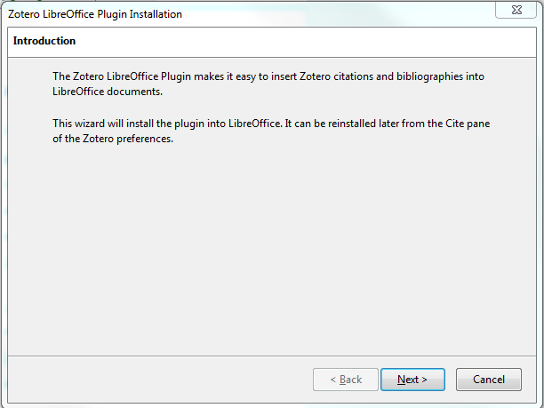
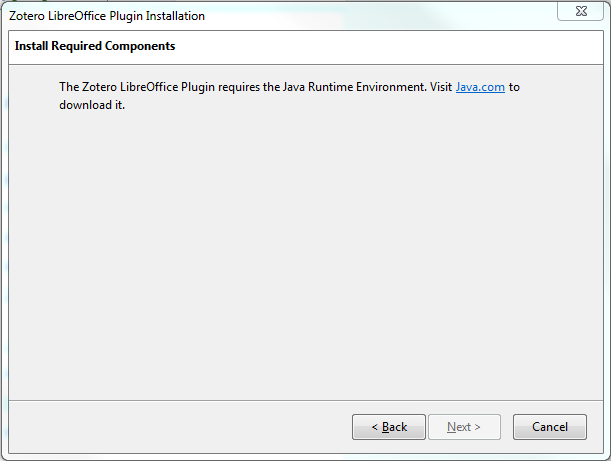
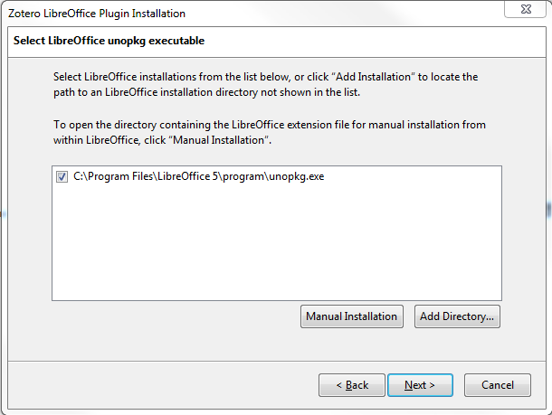
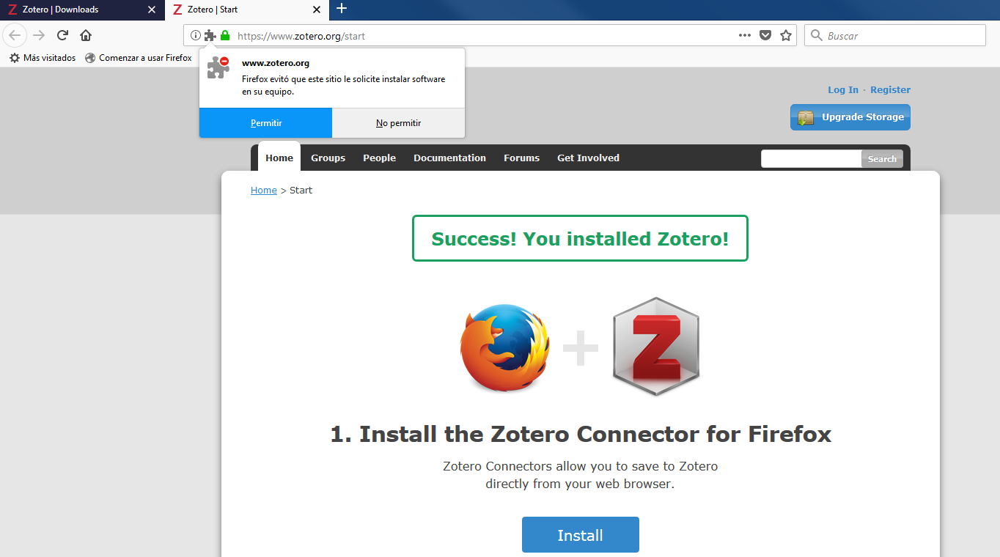
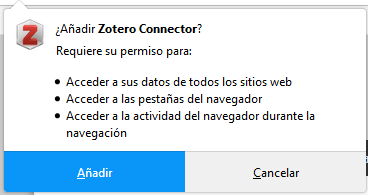
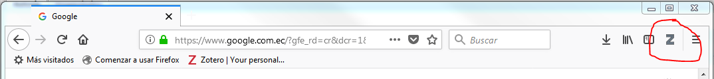
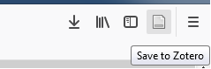
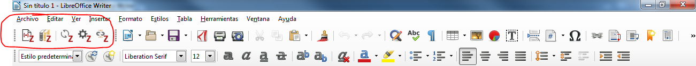
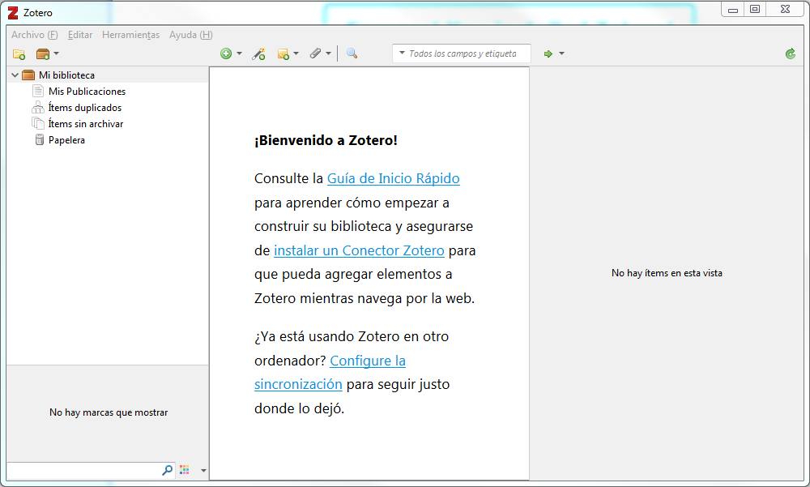

Tema: Instalación de Zotero
Instalación de Zotero
Visite el sitio web oficial de Zotero y descargue la última versión, clicando en "Download ", abriéndose la página desde donde descargar los elementos necesarios para Zotero. Habrá que tener instalado previamente Firefox (puede instalar Firefox desde aquí).
- En la página de descarga:Descargue e instale Zotero en el sistema operativo de su preferencia. Una vez instalado el programa, al ejecutarlo, si tiene instalado un programa procesador de palabaras, (como Writer de LibreOffice/OpenOffice o Word de Microsoft Office) le pedirá intalar el "plugin" correspondiente. De ser necesario le remitirá a instalar y configurar Java. En la imagen a continuación se presenta el ejemplo en el caso de tener el procesador de palabras Writer de el conjunto de programas de Libre Office. En el caso de Word, se procedará de igual manera, o se podrá optar por descargar de la página zotero.org el plugín para word e instalarlo.


- 
- Al ejecutar el programa y si tiene instalado el navegador Firefox le sugerirá instalar el conector de Zotero para Firefox (debemos hacer clic en permitir la instalación, y luego añadir el componente o plugín, tal como se muesra a continuación)


- Al ejecutar el programa y si tiene instalado el navegador Firefox le sugerirá instalar el conector de Zotero para Firefox (debemos hacer clic en permitir la instalación, y luego añadir el componente o plugín, tal como se muesra a continuación)
- Una vez instalado el complemento en Firefox tendrá que reiniciarlo (tal como se le pedirá). Entonces aparecerá un icono con la Z en la barra de órdenes (así:
 ). También puede comprobar que esté instalado mirando en la ventana que se abre desde la barra de los menús (Herramientas|Complementos), haciendo clic en la pestaña Extensiones: aparecerá Zotero en la lista de complementos.
). También puede comprobar que esté instalado mirando en la ventana que se abre desde la barra de los menús (Herramientas|Complementos), haciendo clic en la pestaña Extensiones: aparecerá Zotero en la lista de complementos.

Al lado superior derecho del navegador aparece el ícono con la Z que puede aparecer también con un ícono con una hoja como podemos ver en la figura a continuación. al poner el cursos sobre el ícono aparece la opción "Save to Zotero" guadar en Zotero

- Si utiliza editores de documentos (como Writer de LibreOffice/OpenOffice o Word de Microsoft Office) también puede utilizar Zotero para añadir referencias en documentos de texto, una vez descargados e instalados los complementos correspondientes.
- Una vez instalado el plugin de Zotero, dentro de su pocesador de palabras le debe aparecer al Menú de Zotero , o directamente los íconos de Zotero, como podemos ver en la imagen a continuación:

En resumen, luego de la instalación usted debe tener las siguientes herramientas:
- El programa Zotero instalado
 - El plugín o complemento de Zotero dentro de su editor de textos o precesador de palabras (Word, Writer) (como un menú o directamente los íconos de las herraminetas de Zotero
- El ícono de Zotero en el Navegador Firefox. (También puede instalar el plugín en el navegador Google Chrome)